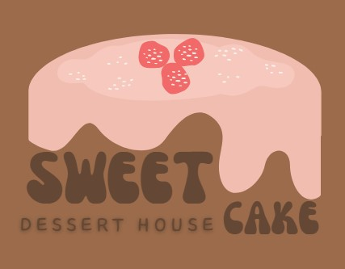

<link href="//maxcdn.bootstrapcdn.com/bootstrap/4.1.1/css/bootstrap.min.css" rel="stylesheet" id="bootstrap-css">
<script src="//maxcdn.bootstrapcdn.com/bootstrap/4.1.1/js/bootstrap.min.js"></script>
<script src="//cdnjs.cloudflare.com/ajax/libs/jquery/3.2.1/jquery.min.js"></script>
<nav class="navbar navbar-icon-top navbar-expand-lg navbar-dark bg-dark navbar-custom">
  <button class="navbar-toggler" type="button" data-toggle="collapse" data-target="#navbarSupportedContent" aria-controls="navbarSupportedContent" aria-expanded="false" aria-label="Toggle navigation">
    <span class="navbar-toggler-icon"></span>
  </button>

  <div class="collapse navbar-collapse" id="navbarSupportedContent">
    <ul class="navbar-nav mr-auto">
      <li class="nav-item active">
        <a class="nav-link" href="/home">
          <i class="fa fa-home"></i>
          Home
          <span class="sr-only">(current)</span>
          </a>
      </li>
      <li class="nav-item">
        <a class="nav-link" href="/recipes">
          <i class="fa fa-list">
            <span class="badge badge-danger" *ngIf="(recipeCount$ | async) !== null">{{ recipeCount$ | async }}</span>
          </i>
          RecipeList
        </a>
      </li>
      
      <li class="nav-item">
        <a class="nav-link" href="/user/register">
          <i class="fa fa-user-plus">
           
          </i>
          register
        </a>
      </li>
      <li class="nav-item">
        <a class="nav-link" href="/user/login">
          <i class="fa fa-sign-in">
            
          </i>
          login
        </a>
      </li>
      <li class="nav-item">
        <a class="nav-link" href="/recipes/addRecipe">
          <i class="fa fa-pencil-square-o">
            <!-- fa fa-plus-circle -->
          </i>
          addRecipe
        </a>
      </li>
      <li class="nav-item">
        <a class="nav-link" href="user/logOut">
            <i class="fa fa-sign-out"></i>
            LogOut
        </a>
    </li>
    
    </ul>
    <ul class="navbar-nav ">
      <li class="nav-item">
        <a class="nav-link nav-link-search" href="/recipes">
          <svg xmlns="http://www.w3.org/2000/svg" width="24" height="24" fill="currentColor" class="bi bi-search" viewBox="0 0 16 16">
            <path
              d="M11.742 10.344a6.5 6.5 0 1 0-1.397 1.398h-.001q.044.06.098.115l3.85 3.85a1 1 0 0 0 1.415-1.414l-3.85-3.85a1 1 0 0 0-.115-.1zM12 6.5a5.5 5.5 0 1 1-11 0 5.5 5.5 0 0 1 11 0" />
          </svg>
          Search
        </a>
      </li>
    </ul>
    
  </div>
</nav>
